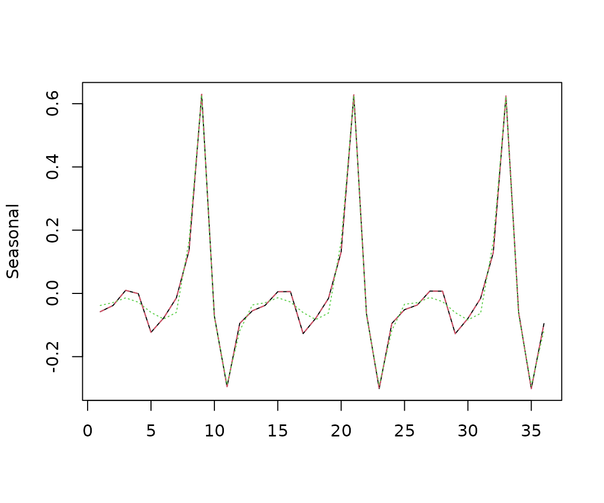

Regular periodic cubic splines
Jean Palate
2024-07-12
Source:vignettes/regsplines.Rmd
regsplines.RmdUse of regular periodic cubic splines
s<-log(ABS$X0.2.09.10.M)BSM with full periodic splines seasonal component
The results of the first two models should be identical (up to numerical precision)
model<-model()
seas<-splines_regular("s", 12, nodes=c(0:11))
add(model, llt)
add(model, seas)
add(model, n)
rslt<-estimate(model, s)
sa2<-result(rslt, "ssf.smoothing.components")
summary(sa1[,2]-sa2[,2])
#> Min. 1st Qu. Median Mean 3rd Qu. Max.
#> -3.099e-07 -4.402e-08 -4.641e-10 2.138e-10 4.262e-08 2.310e-07BSM with partial periodic splines seasonal component
The splines are computed on 8 points (instead of 12)
model<-model()
seas<-splines_regular("s", 12, nodes=c(1,2,6,7,8,9,10,11))
add(model, llt)
add(model, seas)
add(model, n)
rslt<-estimate(model, s)
sa3<-result(rslt, "ssf.smoothing.components")
matplot(cbind(sa1[301:336,2],sa2[301:336,2],sa3[301:336,2]), type='l', ylab="Seasonal")